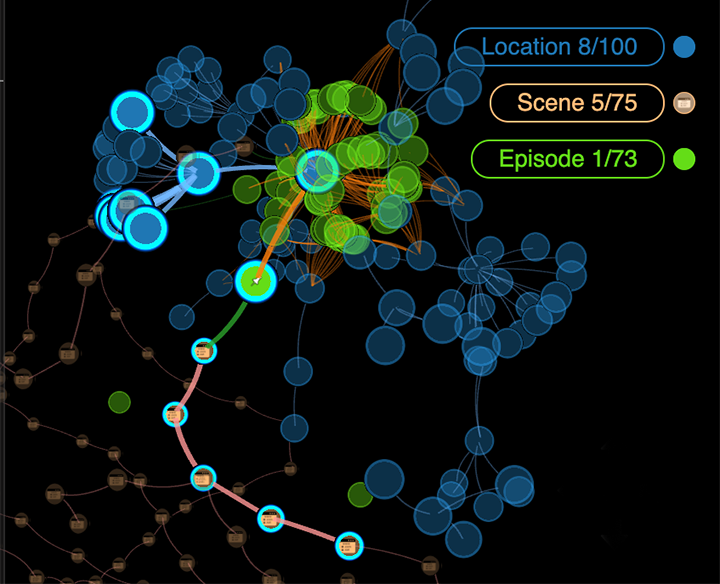
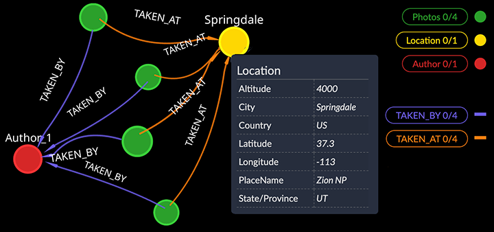
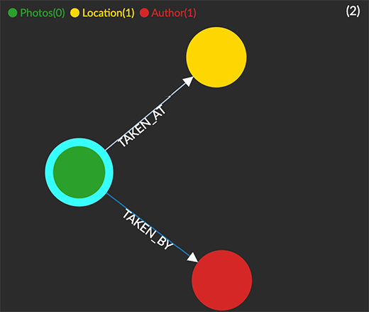
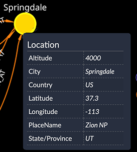
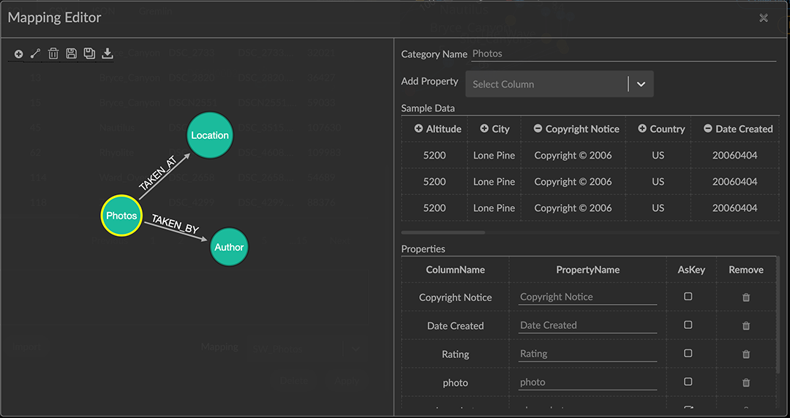
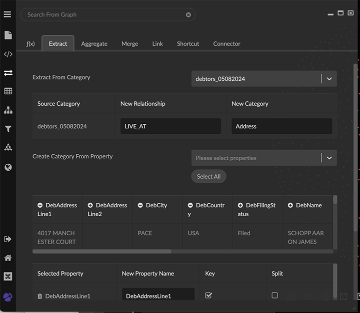

Graph Data Basics Graph data expresses information as patterns built from entities, connections, and their associated properties. A GraphXR project provides a virtual 3D space for viewing and working with such graph patterns. Visualizing patterns in terms of both direction and multi-hop connections can quickly provide insight that is difficult or impossible to discover in tables or hierarchical data structures. And a graph data model can be easily extended and modified.  The Labeled Property Graph GraphXR supports a labeled property graph model, in which patterns are composed of three elements: nodes, edges, and properties.  Nodes are entities, such as people or events. All nodes of a given type comprise a Category with a single label, such as Location that identifies it in GraphXR. Each node appears in a GraphXR project as a circle, colored and styled according to its category. The properties of individual nodes can be displayed as optional captions or a portrait image. Edges are connections between nodes, such as TAKEN_AT or TAKEN_BY. All edges of a given type comprise a Relationship. Each edge is represented by a line connecting two nodes, colored according to its relationship. Directed relationships such as PARENT_OF have an arrow at one end, while directionless ones such as FRIENDS_WITH do not.  Properties in a labeled property graph are key-value pairs associated with nodes or edges. Properties include a key such as placeName or country, and a value. Property values can be in the form of numbers, text, geospatial coordinates, date or time. Multiple values can be entered for a property of a node or edge.  Sources of Graph Data Data can be added to your graph from many different sources. You can: Pull or query graph data from a Neo4j graph database connected to GraphXR, or load data exported from other graph databases or another GraphXR project. Data exported from a graph environment will include its defined categories, relationships, and properties. Import data in CSV, JSON, and many other formats simply by drag and drop. When you import data that has no associated graph model, such as a flat CSV file, each row in the table is imported as a node of a single default category. In most cases, you will then re-model data imported by drag and drop using GraphXR transforms. Add new nodes and edges of existing or new categories or relationships directly in GraphXR. Normally, you would do this only for very small amounts of data. Edit category, relationship, or property labels, and edit property values. Graph Data Modeling The graph data model is both flexible and extensible. Since data exploration and analysis is highly iterative, this is a powerful advantage. New categories, relationships, and properties can be added, and old ones re-defined as investigation and analysis proceeds. GraphXR’s Mapping Editor lets you construct graph patterns from the columns in a flat CSV file or relational database table, and apply the model during import. Your mapping is saved and can be re-used and edited. It can even be applied to other tabular files that have content labeled in the same way.  Once data have been imported, you can Edit category, relationship, or property labels, and edit property values. Use GraphXR Transforms to quickly apply new data models. You can: Extract a property as a new category and define its connected relationship. Aggregate, merge, or simplify complex patterns. Re-format and combine property values as needed. 